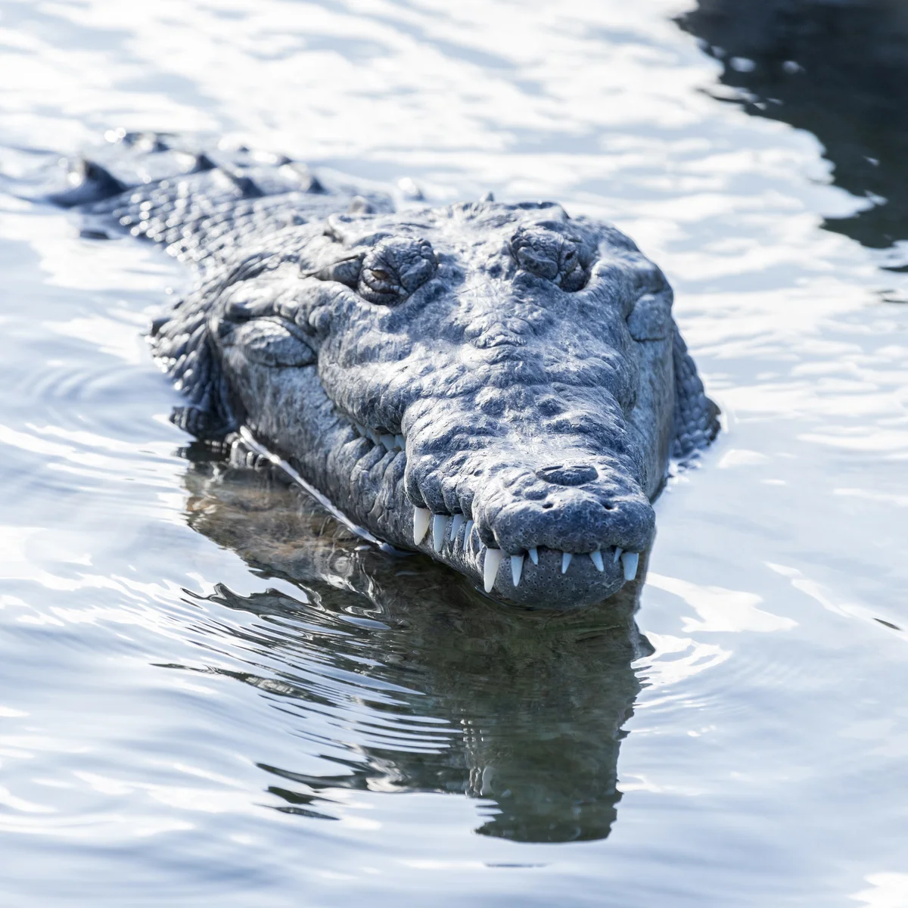
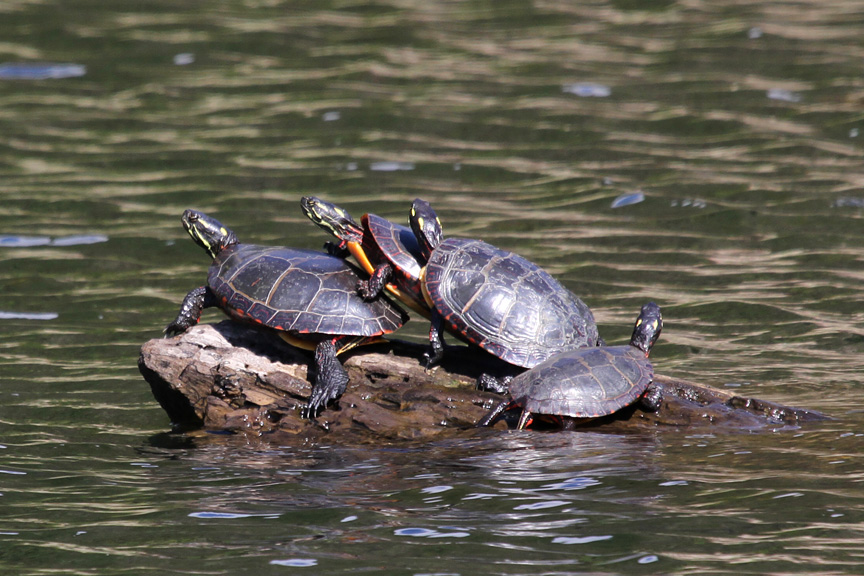
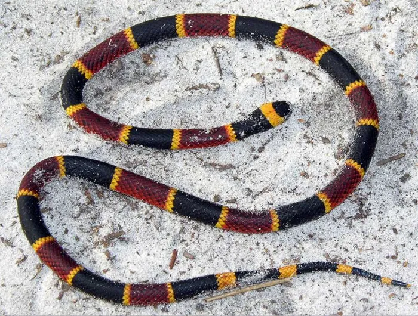
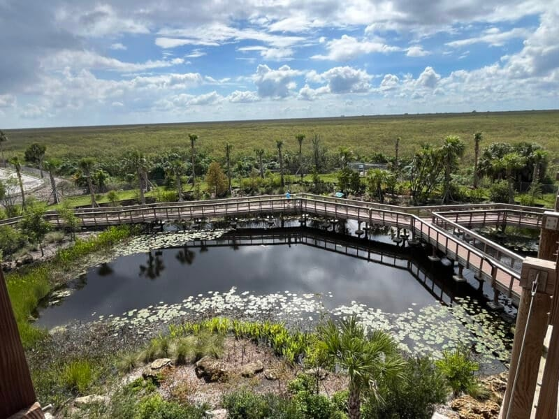
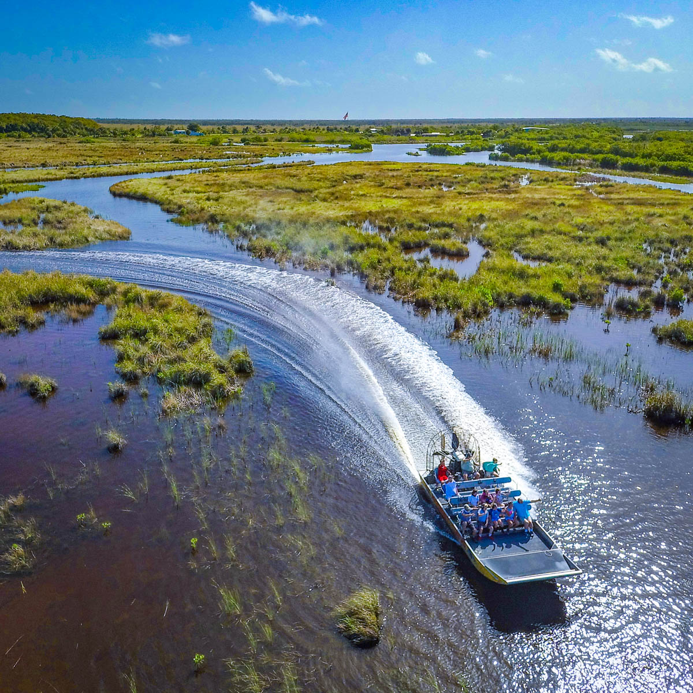

What to expect
Florida's native environments and wildlife are like no other.
The marshes and wetlands of Florida cross thousands of acres thoughout the state, filled with beutiful greens and browns from all the plant life.
American Aligators are the top predator of the lands. While scary at first, they have little interest in attacking humans, which allows us to appriciate them without issue.

Turtles are another staple in Orlando's fauna. Snapping, softshell, and musk turtles are all unique species of turltes that reside in the many ponds and marshes of Florida, often basking together in the sun.

Snakes are very important to Orlando's environment. They help clear out invasive species we brought to its environment, protecting it where we failed.
They are often solitary hunters which are more afraid of humans than anything else, so as long as you give them space they won't attack you at all.

Where To Enjoy
The Florida Everglades are the main hotspot to appriciate the nature of Orlando. The best way to enter it is through Airboat tours, paddling through the marshes,
or taking a hike through local the many parks Orlando has for protection of its nature. Whats the best option? Thats for you to decide. Nature should be enjoyed
in the way you feel the most comfortable in, and forcing any 1 way could ruin your expirience of the everglades.

